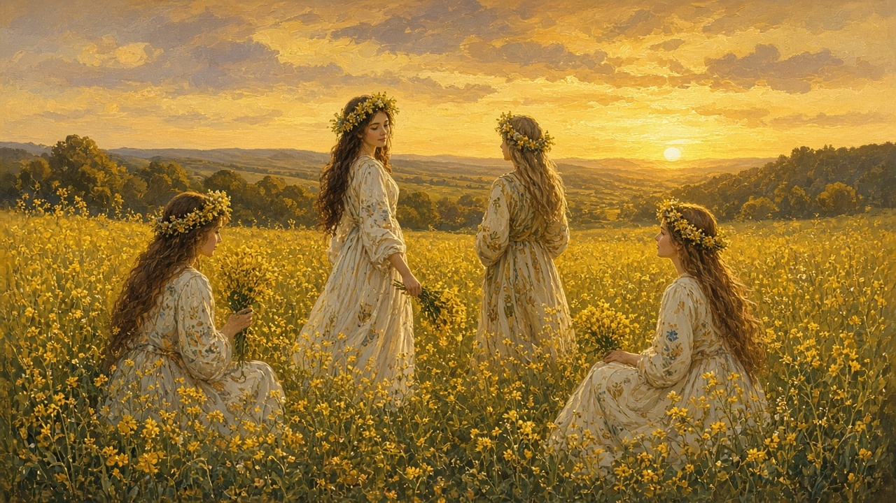
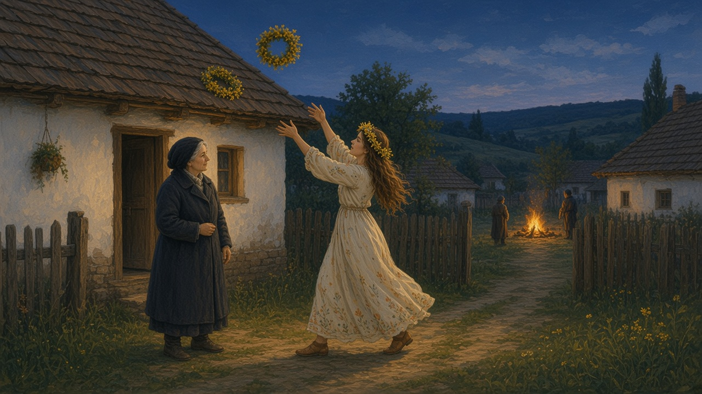

Sânziene
June 24. Yellow flowers in a crown, a night villages remember differently, and the church keeping the birth of John the Baptist on the same date. Folk and feast at once.

Midsummer, and a saint
The longest light sits around this day. Work is outside. Tomatoes are worth eating. The year already named the hinge: Midsummer herbs, yellow flowers. The church keeps Nașterea Sfântului Ioan Botezătorul — the Nativity of John the Baptist — on the same civil date most parishes use. The parish bulletin says Ioan; the yard still says Sânziene for the same morning. Some houses go to liturgy. Some pick what is blooming in the ditch. Some do both. This is not one script, and it is not a tourist night with a ticket. In the south, some yards still say Drăgaica for the same stretch of June. The word changes. The week does not.
Yellow crowns
Girls and young women pick the small yellow flowers people call sânziene — lady’s bedstraw, and whatever else has gone yellow in the grass that week. They twist them into crowns, coronițe. Worn on the head, hung on a gate, thrown onto a roof or a well-house. What is not worn gets hung on the poartă or the cișmea and browns there. If it catches, talk follows. If it falls, talk follows anyway. Villages remember the throws differently; this page does not flatten them into one game. The crown is small work, like the March thread on Mărțișor: an object you can hold, not a parade. How a sat fills on a feast — the road, the yard, who is home from town — sits on villages.
Herbs people still name
Midsummer is when some households still cut herbs and hang them to dry. Last year’s bunch may still hang behind the stove until this year’s is cut. People name them for luck, for a household that wants a sign, for love and fortune talk that does not need a recipe written down. A wreath under a pillow, a dream about who you might walk with — those sentences still get said, even in kitchens that no longer do the thing. This page will not list steps. It is enough that the names survived. The courtship those dreams sit inside is on romance. Paște is another calendar marker with its own table and its own night. December has colinde at the door. This is the June one: flowers, not carols, and a crown instead of a pin.
On the gate, and another name
A coroniță on the gate or the well-house is as ordinary as one on a head. It dries. Nobody treats it as a display. John the Baptist is the liturgy that morning — the same civil date most parishes keep. In the south some yards still say Drăgaica and mean this stretch of June, not a second feast. The well that takes a crown is on the well. The poartă that takes one, in the north, is on gates. The kitchen that hangs last year’s bunch is a room of the house.
The roof
The crown that is not worn gets thrown. The yellow sânziene — lady’s bedstraw, already named — are twisted into a coroniță and sent up onto the roof. Someone watches whether it catches on the ridge, or slides back into the yard. The talk that follows is about the year ahead. Who might marry. Whether the house will be well. Not every sat reads the catch the same way. This page does not make the landing a forecast. The hanging on a gate was already named. The roof is the throw.
A house that still does it uses the roof it lives under. The roof and the room under it sit on the house. You do not need a rule for the ridge. One person tosses. The others look. If it stays, the talk is one kind. If it falls, the crown is picked up out of the yard and the talk is another. There is no second ceremony. The March thread leaves a coat for a branch — that pin is on Mărțișor. This one leaves the hand going up. Both sit on the year.

The night before
The night people mean runs from the twenty-third into the twenty-fourth, on the date the parish keeps. The year already set the common reckoning on June 24. Some houses still keep the older calendar. That difference sits on Orthodoxy. This page does not pick a second date. It names the night. Some places light a small fire, at the edge of a field or in a yard, and people stand near it. A few still step over it. Not every sat does. This page does not make a bonfire the rule. Older talk says the sânziene are out that night as more than flowers, and that a person who walks into their dance can come home ill. You do not need a catalog of iele. The warning, where it is still said, is not to go looking for them.
Toward morning the grass is still wet. Where girls still go out, they go together, and they sing. The verses are short. This page will not print them. The song is the walk, the way a December knock is a visit — that one is on colinde. Before the sun dries the grass, some of them wash in the dew: a face, a pair of hands, the wet still on the flowers. The bunch that will hang behind the stove is cut while it is still wet; the drying was already named. The morning is the wash, where a yard still does it, and then the liturgy already named.
Church morning, field night
Belief, the calendar the parish keeps, and why a feast may not match a Western date sit on Orthodoxy. The year page keeps the summer stretch short: hramuri in the yard, then Adormirea in August. This page is only the Midsummer hinge. You do not need a catalog of iele and night beings. Older talk names the sânziene as more than flowers; it does not have to be acted out for the word to stay. The roof takes a crown, and the dawn takes the dew, where a yard still does either. Ask whether this street still picks the yellow ones, or only remembers a grandmother who did.